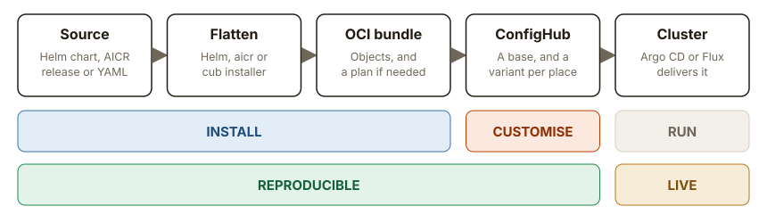

The model in one line
Flatten it. Put it in an OCI bundle, with a plan if it needs one. Load it into ConfigHub.

- Install decides which objects exist. If they are wrong, change the source and flatten again.
- Customise changes a copy for one place. If the objects are right and this place differs, change it in ConfigHub.
- Everything before the cluster can be repeated exactly. The cluster is live.
That is the whole model. The rest of this page is detail.
The three steps
| Step | What happens | Tool |
|---|---|---|
| 1. Flatten | A source is turned into plain Kubernetes objects. | Helm for a chart. cub installer for an installer package. aicr for an AICR recipe. |
| 2. Bundle | The objects go into one OCI bundle. If they need steps that objects cannot carry, the plan goes in with them. | The Catalog publishes the bundle. |
| 3. Load | The bundle is loaded into ConfigHub. It becomes a base, and you make a variant of it for each environment. | cub variant upload |
Then you deploy a variant to a cluster.
Every stage, in one picture

Read it from left to right, and read each row as one question. Select the picture to open it at full size. The rest of this page explains the rows.
Two questions sort every change
Install or customise?
Ask whether the objects are right. If they are wrong, change what produced them. If they are right and this place differs, change a variant.
| Install | Customise | |
|---|---|---|
| The question | Which objects, from which source? | The objects are right. How does this place differ? |
| Kind of intent | Developer | Operator |
| Examples | A new chart version, a component on or off, CRDs in or out, an AICR criterion | Replicas, an image, limits or environment variables for one environment |
| What you change | The recipe: values, preset, inputs or criteria | A variant in ConfigHub |
| Tool | Helm, aicr or cub installer | cub function on the variant |
| Result | A new OCI bundle and a new base, which you promote to each variant | A new revision of that variant |
If you are unsure and the field is a standard Kubernetes one, customise it. That needs no new render.
Reproducible or live-dependent?
Ask whether you could get the same answer on a laptop, with no cluster and no account. If you could, it is reproducible.
| Reproducible | Live-dependent | |
|---|---|---|
| Install | The chart version, values, preset and AICR criteria. The same inputs give the same objects. | Cluster facts, the cluster name, the region, whether a CRD already exists. You read each one, then record it. |
| Customise | Replicas for each environment, or a limit agreed in review. A named function runs on a stored revision. | Scaling after a load spike, or a fix during an incident. The decision depends on what is happening, and the result is still a recorded revision. |
A live value becomes reproducible once it is recorded. Reading it depends on the moment, and re-using the recorded value does not. What can't be recorded in advance stays live, such as the health of a workload or whether a required Secret exists right now.
Step 1. Flatten
Before flattening, you choose a recipe. A source is what a provider publishes, such as a Helm chart, an installer package or an NVIDIA AICR recipe. A recipe pins one choice from it: the source, its version and one set of values.
Flattening runs the source's own tool once and keeps the objects it produces. Nothing runs that tool again when you install.
| Source | Flattened by |
|---|---|
| Helm chart | Helm |
| Installer package | cub installer |
| AICR recipe | aicr |
| Plain YAML | Nothing. It is already objects. |
Step 2. Put it in an OCI bundle, with a plan if it needs one
An OCI bundle is one artifact in a registry. It holds the flattened objects.
Not all source configuration can be completely flattened. The configuration steps taken after flattening are called the plan. Examples are "apply the CRDs first" and "this Secret must exist". A bundle carries its plan. A bundle that needs no such step has no plan.
You can pull, read, compare and install an OCI bundle with no account.
Step 3. Load it into ConfigHub
New to cub? Install the cub CLI first. Public catalog packages pull and render anonymously, and you sign in only once a command saves or changes ConfigHub data.
cub variant upload --component gpu-operator --variant base --namespace gpu-operator "$BUNDLE"The bundle becomes a base, with one Unit for each object. A variant is a copy of the base with your changes for one environment. When a new bundle arrives, you load it over the base and promote the change to each variant.
| You want to | Do this |
|---|---|
| Turn a component on or off | Flatten again with new values. It gives a new bundle, and a new base. |
| Set replicas or limits for one environment | Make a variant of the base. |
| Make production differ from staging | Make a variant of the base for each. |
After the three steps
| Stage | What happens | Tool | Install or customise? |
|---|---|---|---|
| Customise | You make a variant of the base, and change it for one environment. | cub variant create, cub function | Customise |
| Promote | A new base arrives, and you move it to each variant. Your edits stay. | cub variant promote | Install reaches customise |
| Release | One approved revision is published to OCI by digest. | cub release publish | Neither |
| Deliver | Argo CD or Flux pulls that digest and applies it. | Argo CD or Flux | Neither |
| Observe | Someone reads what is running, and the next change starts. | cub scout | Neither |
Helm, AICR and cub installer
Helm and AICR generate objects. cub installer does not generate from templates. It takes objects that were already generated, and lets you choose a preset and supply inputs.
| Helm | AICR | cub installer | |
|---|---|---|---|
| Its job | Turn one chart and its values into objects. | Choose many charts and their values for a GPU platform. | Apply a preset, inputs and named functions to objects in a package, then load the result. |
| You give it | A chart version and values | Five criteria | A package, a preset and any inputs |
| It gives you | Plain objects | Argo CD Applications, most of which still name a chart | Files, a literal OCI artifact or a base in ConfigHub |
| When it runs | Once, when the Catalog is built | Once, when the Catalog is built. Argo CD renders the named charts when it deploys. | On your machine, when you choose |
| How it relates | Its output is what an installer package holds. | It uses Helm. It has no installer package. | It wraps Helm's output. It runs no Helm, and it is not used for AICR. |
Plain YAML needs none of them, because it is already objects.
Two routes into ConfigHub for a Helm entry
Every Helm entry is in OCI inside its chart's installer package. Where the flattening verdict permits, the entry also has a published OCI bundle.
| Route | Commands | Use it when |
|---|---|---|
| OCI bundle | cub variant upload | The entry has a bundle, and you have no inputs to supply. |
| Installer package | cub installer setup, then cub installer upload | The verdict forbids a bundle, or the package asks for inputs or cluster facts. |
Here is what the command does. cub installer is an open-source plugin for the cub CLI. cub installer setup pulls a catalog package and writes its Kubernetes files locally, leaving delivery to kubectl, Argo CD or Flux. The generated scripts stop before doing any work when the plugin or kustomize is missing.
The OCI bundle is the default. An entry page's upload step prints it wherever one is published, and prints the installer package route otherwise. Both routes end in the same place, which is a base with variants. One dated run shows the OCI bundle route from upload to the cluster.
What OCI does
OCI is the transport. It is not a tool, and it is not proof of a deployment. It does three separate jobs, and each has its own digest.
| Job | What it holds | Who makes it | What happens next |
|---|---|---|---|
| Source | A chart, an installer package or an AICR-generated chart | The provider or the Catalog | A tool still has to run. |
| Literal | Flattened objects and their plan. An OCI bundle is this kind. | The Catalog, or cub installer setup --output-oci | You read, compare or load them, and no generator runs. |
| Release | One approved ConfigHub revision | cub release publish | Argo CD or Flux applies that exact digest. |
What a plan does, and what GitOps does
A plan is a written list. It does not run itself. No plan step in the Catalog is marked automatic. Each step names who carries it out, and the entry page lists them.
| When | What happens to the plan | Who |
|---|---|---|
| At flattening | It is written, and it goes into the OCI bundle. | The Catalog |
| Once the variant and destination are known | It is settled, because a change or a target can alter it. | You or your pipeline |
| At delivery | Each step is carried out. | A person, a pipeline or a GitOps tool, as the step says |
One entry shows all of this. Karpenter 1.14.0 with its eks-inference base has 18 objects and three plan steps.
| Step | What it says | Who carries it out |
|---|---|---|
| Before apply | One schedulable node must exist outside Karpenter. | An operator |
| Before render | AWS_REGION must be set, because the controller stops without it. | An operator |
| At apply | Apply the 5 CRDs first, wait until they are Established, then apply the rest. | The applier you choose |
GitOps delivers. It does not decide. Argo CD or Flux pulls the release digest, applies it and reports the result. Each can express an ordering step, with sync waves or with dependent Kustomizations, but you have to set that up. The Catalog's records have not yet watched a GitOps tool carry out a plan step, so each entry page says what has run.
For an AICR entry, Argo CD also renders the charts its Applications name. That render happens on the cluster, after flattening.
Where live values come from
| Value | Example | Where it is read from | How it is kept |
|---|---|---|---|
| Destination input | Cluster name, region | You, for each destination | The objects hold confighubplaceholder until a variant sets the value. |
| Fact | Node hardware, an existing CRD | The cluster, by a package's collector | Recorded once cub installer writes it to facts.yaml. |
| Secret material | A password | The destination | Named by the plan. An entry whose render holds key material gets no OCI bundle. |
| Live lookup | A chart that reads the cluster as it renders | The cluster, at render time | No OCI bundle is published, because the verdict is unsafe-to-flatten. |
| Late render | The charts inside AICR's Applications | The chart source, when Argo CD deploys | Outside the flattened objects. The Catalog records a digest-bound render beside some of them. |
Developer intent, operator intent and the agent loop
Developer intent is what you install, and operator intent is how you customise it.
| Part of the loop | Who does it | Predictable? |
|---|---|---|
| Decide what to try | An agent or a person | No |
| Produce objects | Helm, aicr or cub installer. The agent supplies inputs, and it does not write objects. | Yes |
| Edit a variant | A named function | The result is, once the decision is made |
| Check | cub checks and ConfigHub gates | Yes |
| Approve | A person or a policy | It depends on the policy |
| Apply | Argo CD or Flux | Yes, for a release digest |
| Observe | cub scout and other readers | No, it reads the live cluster |
An agent's decision can be unpredictable, but what it writes can't be. It either changes the pinned inputs or applies a named function to a variant, and each result is versioned, gated and released by digest. The agent is the author of a change, not the authority for it.
The two kinds of intent meet when a new render is loaded. cub installer upload merges the render three ways and writes only the paths the render changed, so operator edits survive.
The loop isn't closed yet. Live fixes that flow back into desired state are still future work.
What can be traced back
The Catalog keeps a record of what produced each set of objects, so the inputs are never lost. Tracing one rendered field back to the input that set it is a goal, and today it holds only in part.
| Stage | Can you trace a field back? |
|---|---|
cub installer input | Yes, where a function writes the input to a named field. Most packages declare no inputs. |
| Helm values | Only for measured cases. A value can reach many fields, and a field can depend on many values. |
| Variant edit | Yes. ConfigHub records each change as a revision. |
Different inputs can also give the same objects, so a render can't be run backwards from its output alone. That is why the record is kept.
What the flattening verdict means
Every entry records a flattening verdict. It answers one question: can this source be flattened once and delivered as plain objects?
| Verdict | What it means | What you do |
|---|---|---|
safe-to-flatten | The objects are everything. No step is needed around them. | Load the bundle and deliver it. |
flatten-with-routes | The source is flattened, and some steps must still happen when you deliver. Those steps are the plan. "Routes" is the stored name for the plan's steps. | Load the bundle, and carry out the plan when you deliver. |
unsafe-to-flatten | The objects alone are not enough. The source depends on a live lookup, generated state or a destructive lifecycle step that no plan step covers yet. | Use the installer package with cub installer. No bundle is published. |
born-flattened | The source is already plain objects. | Load it and deliver it. |
Three questions people ask about flatten-with-routes.
Is it completely flattened? For a Helm chart, yes. Helm has run, and nothing renders again when you install. Most plan steps are work around the objects, such as "apply the CRDs first", "this Secret must exist" or a hook Job. A few name a value that only your destination knows, such as a cluster name or a region. The objects hold the placeholder confighubplaceholder where that value goes, and the entry page lists it as an input the destination must supply. You replace the placeholder for each destination before you deliver. For an AICR recipe the bundle holds Argo CD Applications, and Argo CD still renders the charts inside them when it deploys.
Can I load it into ConfigHub? Yes. cub variant upload loads the bundle as a base, and you make variants of it as you do for any other entry. The plan travels inside the bundle.
What do I do with the plan? Read it on the entry page, which lists each step, who carries it out and whether the Catalog has run it. You, or your pipeline, carry out the steps when you deliver. Where an entry page has a test script, the script stops and names any step it cannot do for you.
Try it
Deploy the GPU Operator from the Catalog does all three steps, and then deploys and tests the result.
Read next
| Page | What it adds |
|---|---|
| The model, in detail | The full definition of each step, and the record layers. |
| Deploy the GPU Operator from the Catalog | The model on one Helm chart, in five steps. |
| One AICR v1.0.0 recipe | The model on one NVIDIA AICR recipe. |
| What we refuse to claim | The limits of what the Catalog says. |
Words
This table is the one place these words are defined. Records and tools keep some older names, and the last column says where a word means something else.
Inputs
| Word | Meaning | Don't confuse it with |
|---|---|---|
| Source | What a provider publishes, such as a chart or an AICR release. | |
| Recipe | One pinned choice from a source: its version and one set of values or criteria. | An AICR recipe is the document aicr recipe resolves from the criteria. The recipes/ directory holds the Catalog's records. |
| Preset | One named set of choices inside an installer package. | installer.yaml and cub installer setup --base call a preset a base. |
| Input | A named value cub installer asks for and writes to a field. | Helm values, which are chosen before the package is built. |
| Fact | Something read from the destination and recorded before a render. | An input, which a person supplies. |
| Placeholder | The value confighubplaceholder, which marks a value each destination must supply. |
Artifacts
| Word | Meaning | Don't confuse it with |
|---|---|---|
| Installer package | One OCI artifact that holds every preset of a chart version. cub installer flattens one preset into files. | An OCI bundle, which holds one recipe's objects. |
| OCI bundle | The flattened objects of one recipe, in one OCI artifact, with a plan if they need one. | AICR's bundle, the output of aicr bundle. Whether to rename either one is an open decision. |
| Plan | The steps that objects cannot carry. Records call them routes. | cub fleet plan and the other plan commands, which preview a change. helm-plan.yaml, which is a Catalog record about a chart. |
| Step | One item in a plan. | |
| Flattening verdict | The recorded answer to whether a source can be flattened once. | AICR's validation result, from checks against a cluster. Whether to rename "verdict" is an open decision. |
| Receipt | The recorded result of a generation, check, delivery or test. | AICR's evidence bundle, which records one AICR run. |
In ConfigHub and on a cluster
| Word | Meaning | Don't confuse it with |
|---|---|---|
| Base | An OCI bundle or installer output loaded into ConfigHub. | A preset in a package, before it is loaded. |
| Variant | A copy of a base with your changes for one environment. | |
| Unit | One object in ConfigHub. | |
| Space | The ConfigHub container that holds the Units of one base or variant. | |
| Release | One approved revision, published to OCI for delivery. | A chart's version or a Helm release. |
| Stack | A set of parts named in one manifest and checked for conflicts before it renders. | A platform. |
| Platform | What a stack becomes once it runs under governance with your apps on it. | A stack. |
Intent and the two splits
| Word | Meaning | Don't confuse it with |
|---|---|---|
| Install | Deciding which objects exist, by changing a recipe and flattening again. | Applying objects to a cluster, which is delivery. |
| Customise | Changing a variant, because the objects are right and this place differs. | Editing values, which is install. |
| Reproducible | The same inputs and recorded edits give the same objects. | Predictable decisions. An agent's decision can be unpredictable while its result is reproducible. |
| Live-dependent | Read from a cluster or another store that can change. | A recorded value, which stopped being live when it was recorded. |
| Developer intent | The pinned inputs that deterministically produce a base. | |
| Operator intent | The changes made to a variant, often in response to live operations. | A manual edit on the cluster, which ConfigHub has not recorded. |
Technical notes and disclaimers
- UNOFFICIAL/EXPERIMENTAL.
- The reference page holds the detail.
- Not every entry has a published OCI bundle yet. Each entry page says whether its bundle is published.
- For an AICR recipe, Argo CD still renders the charts inside the Applications when it deploys them.